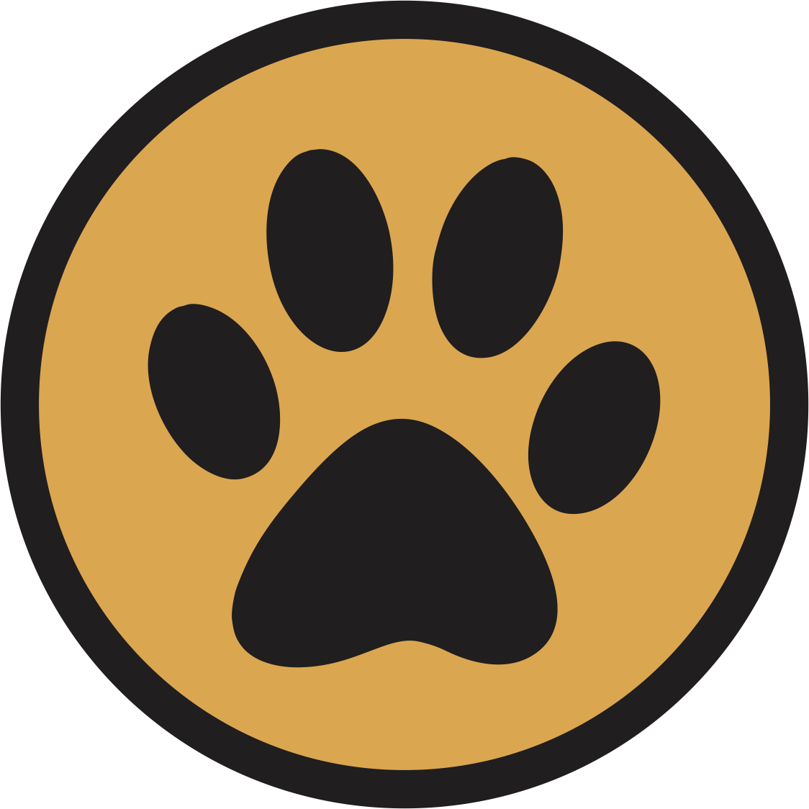
Transformamos abandono e maus tratos em esperança, resgatando, cuidando e encontrando lares cheios de amor para animais da nossa cidade.
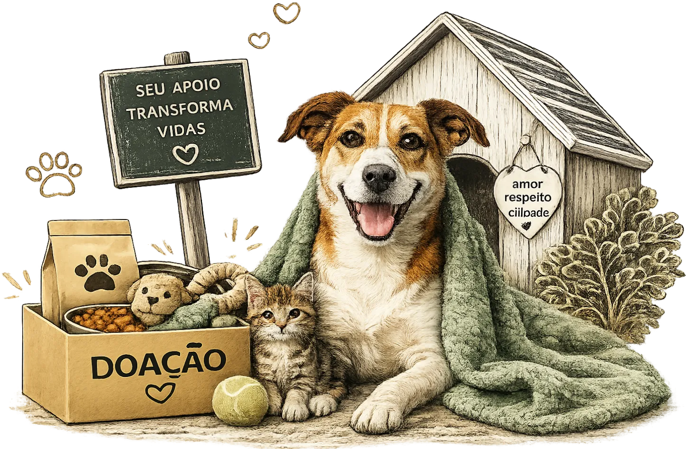
A Associação Amigos dos Animais de Dois Irmãos nasceu em setembro de 2009, da iniciativa de cerca de 12 voluntários — sensibilizados com a situação de cães abandonados, doentes ou vítimas de maus-tratos nas ruas da cidade. No início, sem uma sede própria, os próprios lares dos voluntários serviam como abrigo temporário para recuperar os animais resgatados.
Foram sete anos até a conquista de um espaço centralizado. Em 2016, a prefeitura cedeu uma área na localidade de Picada Verão e, com recursos próprios, doações e promoções comunitárias, a associação construiu sua casa de passagem — garantindo, enfim, uma estrutura física para acolher os animais.
Hoje, as atividades se sustentam em três pilares: parceria pública, com convênios para manutenção e castrações; doações da comunidade, em ração, cobertas, remédios e ajuda financeira via Pix; e eventos beneficentes, como brechós e campanhas de apadrinhamento. O foco segue firme em feiras de adoção responsável e na conscientização sobre castração, buscando reduzir o abandono na raiz.
O projeto foi pensado para abrigar 100 cães — hoje, enfrenta lotação constante, já ultrapassando 140 em diversas ocasiões. Por isso, a ajuda da comunidade nunca foi tão necessária.
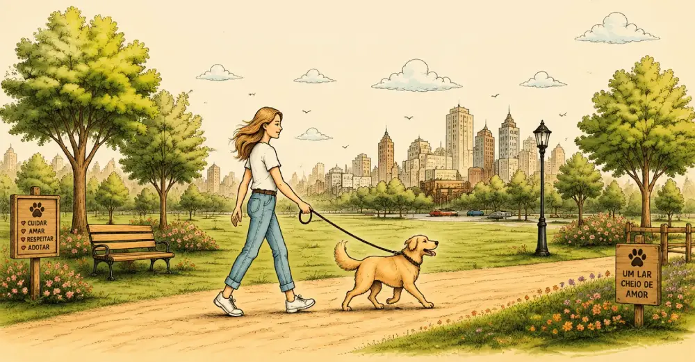
Conheça quem doa tempo e carinho pra essa causa acontecer todos os dias.
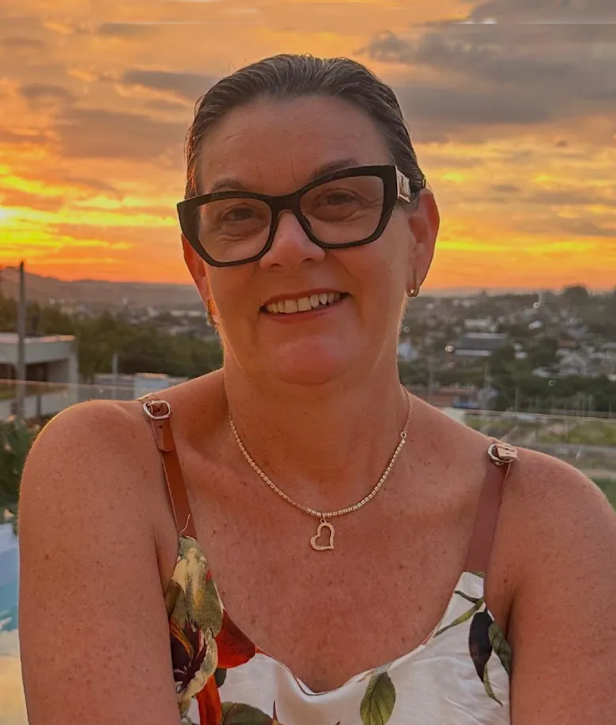
Nice
Fabiana
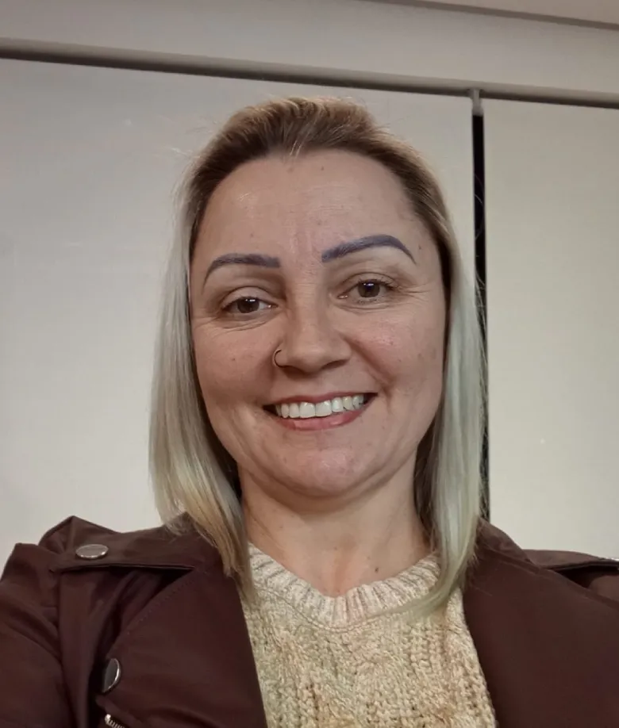
Francieli
Karen
Valdoni
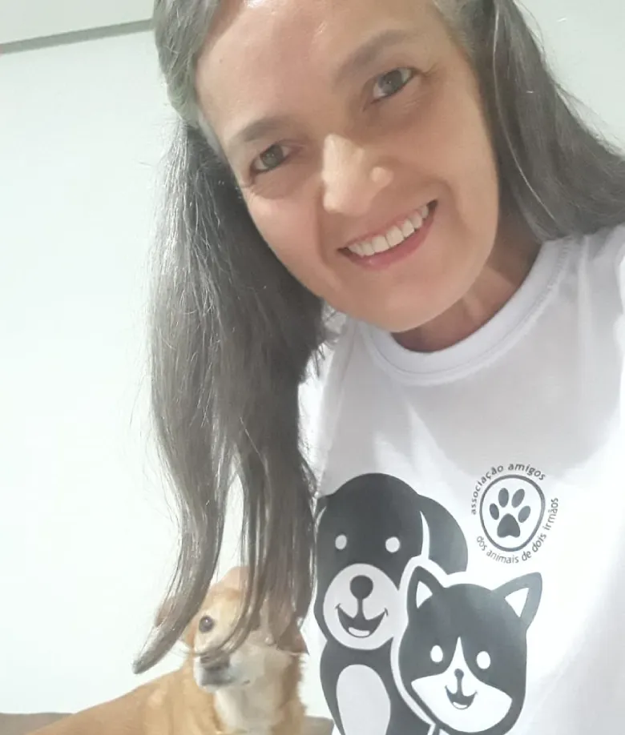
Cris
Isaura
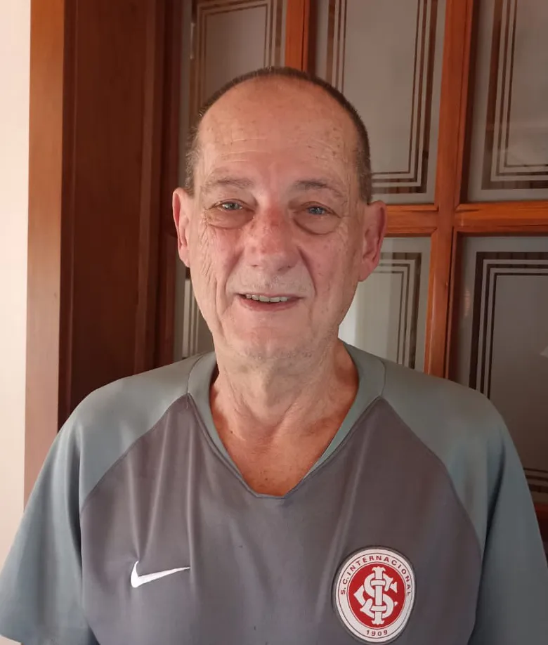
Rogério
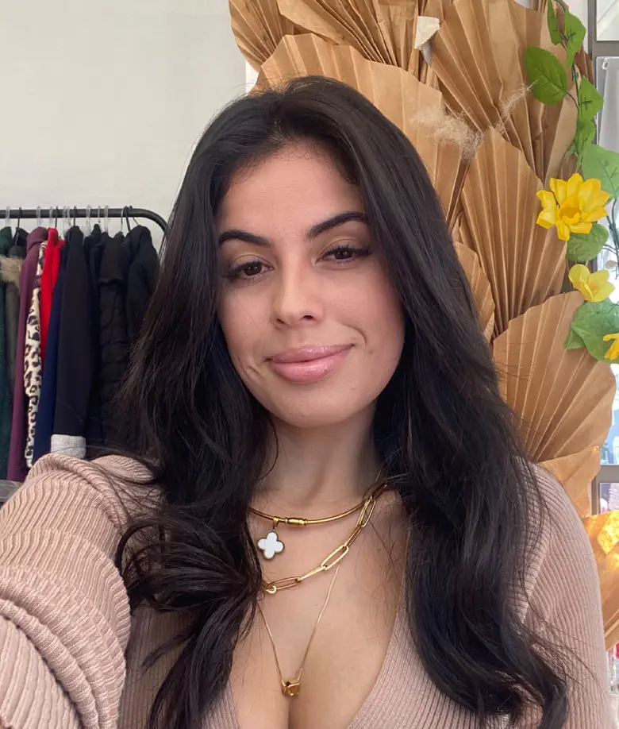
Duda
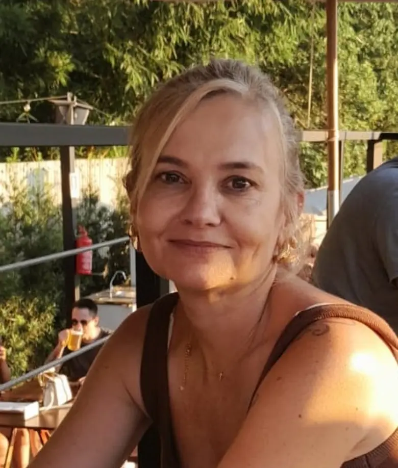
Tati
Conheça quem está esperando por um lar. Todos vacinados e prontos pra fazer parte da sua família.
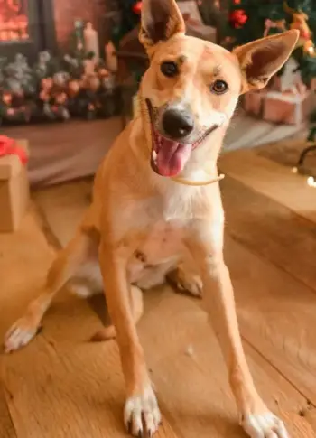
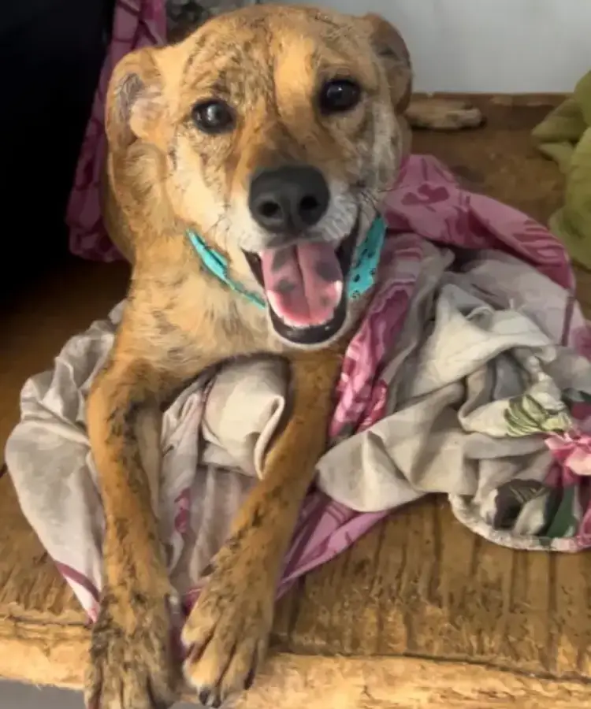
Abra sua casa para um animal que precisa de amor e um lugar seguro para viver. Muitos deles já estão vacinados, castrados e prontos para se adaptar à sua rotina. Todos estão castrados, vacinados e esperando uma família.
Ver disponíveisMedicamentos, cuidados veterinários e internações só são possíveis graças às doações. Também ajudamos famílias de baixa renda com ração e alimentamos cães e gatos em situação de rua. Cada contribuição ajuda a salvar vidas.
Doar via PixVenha fazer parte dessa causa tão nobre! Doe um pouco do seu tempo ajudando nos cuidados com os cães, na limpeza do canil, em feiras e brechós ou compartilhando nosso trabalho nas redes sociais. Entre em contato e saiba como participar.
Quero ajudarQualquer valor ajuda a manter os animais resgatados até encontrarem uma família.
Dúvidas gerais? Manda uma mensagem.
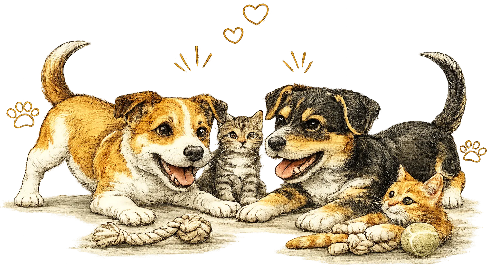